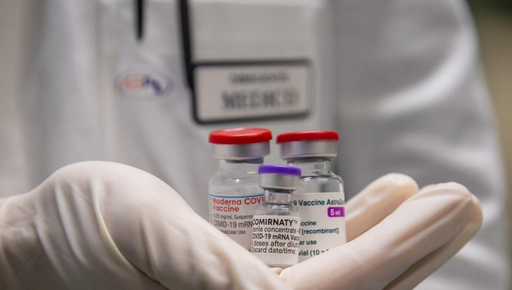

I primi sei mesi di campagna vaccinale hanno lasciato indietro centinaia di migliaia di persone
senza tessera sanitaria o codice fiscale.
Circa 500mila stranieri irregolari (
stime 2020 della fondazione ISMU, Iniziative e Studi sulla Multietnicità) tra cui gli oltre
207mila aderenti alla sanatoria 2020 (
dati del Ministero dell’Interno), sono rimasti a lungo invisibili ai sistemi di prenotazione
del vaccino. Una questione che, oltre a ledere l’universalità del diritto alla salute, stava minacciando
l’efficacia stessa della campagna vaccinale.
In Italia, il tema è stato sostanzialmente ignorato fino all’estate, quando ogni regione ha iniziato a muoversi con
tempi e strategie diverse. Arrivati a dicembre, i migranti possono ormai vaccinarsi in quasi tutto il paese, ma
ottenere il green pass resta ancora un problema.

Regioni a confronto: diverse strategie, diverse velocità
A inizio febbraio, AIFA aveva raccomandato di includere nei sistemi di prenotazione del vaccino il riconoscimento di
tutti i codici per stranieri irregolari alternativi alla tessera sanitaria: Stp, Eni e codici fiscali temporanei
(quelli che vengono forniti al momento della richiesta di regolarizzazione).
Eppure, a un primo segnale di inclusione nazionale non è seguito nulla di concreto nei
cinque mesi successivi.
Il 31 maggio 2021 il Tavolo immigrazione e salute e il Tavolo asilo e
immigrazione hanno inviato una
lettera al commissario straordinario Francesco Figliuolo e al presidente della Conferenza Stato-Regioni Massimiliano
Fedriga: le 32 associazioni che compongono i due tavoli esprimevano "profonda preoccupazione per
la silenziosa esclusione" di gruppi di popolazione in condizione di fragilità sociale dall'accesso alla
vaccinazione. Era solo uno dei numerosi appelli ad agire rivolti dalle associazioni, che chiedevano
linee guida nazionali precise per le autorità sanitarie locali.
A maggio infatti, soltanto il portale di prenotazione dell’Emilia-Romagna era aperto ai titolari
di Stp, Eni e codici provvisori. Il sito della Puglia dava loro indicazioni per “manifestare interesse” al
vaccino, mentre la Liguria aveva attivato le proprie ASL per raggiungerli. Nel resto delle regioni, tutti i migranti
non in regola erano tagliati fuori, anche se appartenenti alle fasce di popolazione fragili, come over 80 e
immunodepressi, che dovevano aver già ricevuto almeno una dose.
Poi qualcosa ha cominciato a muoversi.
Nel corso di giugno, la Campania, il Veneto e infine la Lombardia hanno aperto i propri sistemi informatici ai codici
alternativi alla tessera sanitaria. Lo stesso è stato fatto in luglio dalla piattaforma centrale di Poste Italiane,
in uso presso sei regioni (Abruzzo, Basilicata, Calabria, Marche, Sicilia e Sardegna), mentre la Toscana ha attivato
a metà agosto un apposito numero verde.
Altre regioni, come il Piemonte, hanno provveduto a vaccinare gli stranieri irregolari direttamente senza prenotazione,
attraverso open day, ambulatori itineranti e accordi con le ASL e le associazioni che li seguono, come avvenuto per i
senzatetto.
L’ultima regione a muoversi è stata la Valle d’Aosta, che a inizio novembre ha aderito alla piattaforma di prenotazione
di Poste Italiane, aperta anche a STP. Il Friuli-Venezia Giulia è l’unica regione a non aver previsto nulla per vaccinare
i migranti: soltanto la città di Pordenone ha organizzato degli open day dedicati a metà ottobre.
L'intermediazione del terzo settore: l'esperienza di Intersos in Lazio
All’interno di questo panorama frammentato, l’intermediazione del terzo settore ha giocato un ruolo cruciale
nell'abbattere le barriere culturali, linguistiche e amministrative che spesso separano i migranti dal Sistema
sanitario nazionale. È il caso di Intersos nel Lazio, che da inizio pandemia ha attivato delle cliniche mobili nei
contesti di maggior vulnerabilità per fare informativa sul Covid.
“Una delle nostre attività - ha raccontato Andrea Carrozzini, medico e coordinatore delle unità mobili di Intersos a
Roma – è stata l’allestimento delle stanze di salute, ovvero degli spazi consultivi
all’interno delle occupazioni abitative dove erano offerte visite di medicina generale e, soprattutto,
orientamento ai servizi (come prenotare con e senza tessera sanitaria ricette, visite, ecc.).
Intersos non ha infatti la mission di sostituirsi al servizio pubblico, ma quella di orientare ai servizi competenti:
esiste per fare in modo di non dover esistere più”.
Altri interventi dell’associazione sono stati l’assistenza nell’accesso ai tamponi, problematico per i titolari di Stp
ed Eni, e l’organizzazione di campagne informative sul virus e sui vaccini.
“All’inizio della pandemia, - racconta Carrozzini - alcune popolazioni provenienti per lo più dall’Est Europa hanno
ostentato molto scetticismo sull’esistenza del Covid e sulla sua malignità. Nei mesi successivi, sono arrivate anche
resistenze da persone di origini subsahariane, che vedevano video in cui alcuni esponenti religiosi negavano
l’esistenza del virus”.
L’inizio della campagna vaccinale ha poi portato nuovi ostacoli di natura linguistica. Il Lazio, pur avendo organizzato
open day vaccinali per migranti e aperto loro il portale di prenotazione della Asl Roma 1 in agosto, non ha infatti
organizzato nulla per rendere le informazioni e i canali sanitari comprensibili agli stranieri.
“Il Ssn - prosegue Carrozzini - e in generale i Ssr non sono stati responsivi nei confronti delle persone con
fragilità e vulnerabilità e, soprattutto, verso chi non parla italiano. In Lazio (ma anche nella maggior parte altre
regioni, ndr) la piattaforma regionale di prenotazione è ancora monolingua.
Lo stesso valeva anche per il consenso informato, se non fosse intervenuto l’INMP fornendo
alcune traduzioni. Questo rappresentava una lesione dei diritti, perché le persone non venivano rese consapevoli di ciò
che stavano accettando”.
A complicare la gestione dell’emergenza è stato anche un flusso di informazioni incoerente,
non solo tra i media ma tra le istituzioni stesse. Per esempio, nonostante l’EMA (European Medicine Agency) avesse
consigliato di riservare i vaccini monodose solo per gli over 60, una circolare del
Ministero dell’interno ha chiesto alle ASL di somministrarli a tutti i soggetti hard to reach
, come migranti e senza fissa dimora, perché ritenuti difficilmente reperibili. “Non è sempre vero - ha
aggiunto Carrozzini -. A Roma i senza fissa dimora hanno tendenzialmente insediamenti fissi, mentre i braccianti
agricoli si muovono spesso solo tra Puglia, Calabria e Sicilia. Andando in conflitto con EMA, quella circolare ha
creato resistenze in alcune persone verso i vaccini monodose e ha limitato in parte le adesioni”.
Senza documenti e senza green pass
Il problema dei codici alternativi alla tessera sanitaria si è ripresentato puntuale con l’emissione
del certificato verde, in un primo momento non scaricabile dai titolari di Stp e Eni. Questo
ostacolo legale impediva, ad esempio, l’accesso ad alcune mense e servizi sociali, anche a chi aveva completato il
primo ciclo vaccinale durante l’estate.
Su pressione delle associazioni, il decreto green pass bis è stato
modificato il 24 settembre, in modo che la platea di rilascio del green pass fosse estesa anche agli stranieri senza
permesso di soggiorno.
Tuttavia, nonostante il riconoscimento legale, restano ancora problemi tecnici nell’ottenimento.
“Scaricare i green pass con Stp si sta rivelando drammatico - ha spiegato Carrozzini-. Dopo i
decreti Salvini, molte persone sono tornate irregolari. Ma nel sistema informatico del Lazio i loro vecchi codici fiscali
risultano ancora, anche se non sono più presenti negli anagrafi regionali. Quindi, molti hanno avuto accesso alla
piattaforma di prenotazione con codici non validi e, nel momento del download dei green pass, si sono aperti buchi
importanti. Il grande lavoro delle ASL è ora ritrovare i loro dati a seconda di come sono stati inseriti: molte volte è
una procedura operatore-dipendente, il cui esito è determinato dall’abilità
dell’operatore che ci si trova di fronte”.
Con il decreto 246 del 14 ottobre il
certificato di avvenuta vaccinazione, che viene rilasciato al momento dell’inoculazione, è stato poi riconosciuto come
alternativa valida al green pass nei contesti di lavoro. Il provvedimento era pensato per tutelare tutti i soggetti
vaccinati che, per qualunque problema, ancora non possono scaricare il certificato. “Ma questo - spiega Carrozzini –
funziona solo sulla carta, non nella realtà dei contesti di lavoro di queste persone, spesso senza contratto. Per esempio,
una signora che abbiamo assistito di recente ha dovuto rinunciare a un impiego da badante perché ha ricevuto un tampone
positivo, nonostante fosse vaccinata”.
Tra gli irrisolti problemi tecnici e l’avvio delle terze dosi, la mediazione di associazioni come Intersos continuerà
ad essere fondamentale per garantire ai migranti l’accesso al vaccino e al green pass.